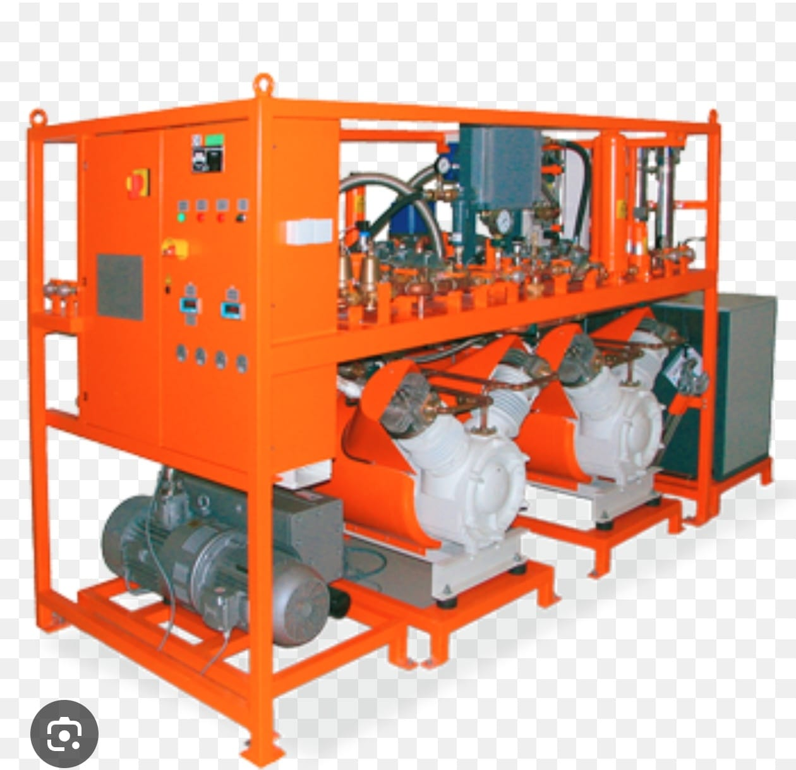
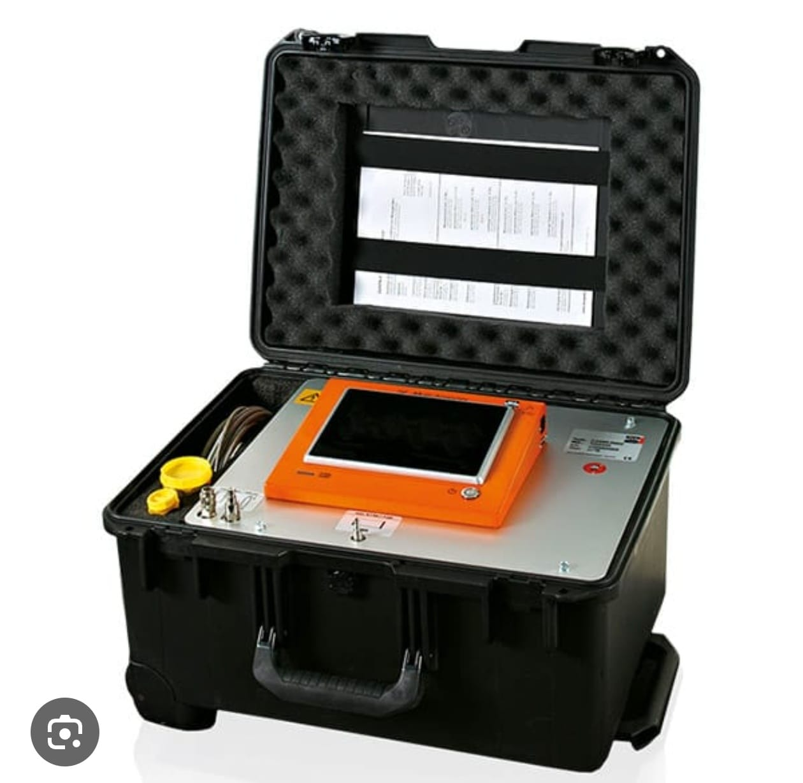

Gas Insulated Substation
Gas Insulated Substation. A GIS is a high-voltage substation where all the main electrical components, such as circuit breakers, busbars, and disconnectors, are enclosed in sealed metal housings filled with sulfur hexafluoride (\(SF_{6}\)) gas.

SF6 Gas Handling Machine: Used for filling, recovering, and purifying SF6 gas in high-voltage switchgear..

SF6 Gas Analyzer: Measures the purity and quality of SF6 gas to ensure safe and reliable equipment operation...
SF6 Leakage Detection Camera: Detects and visualizes SF6 gas leaks in high-voltage equipment for safe and efficient maintenance...
Dew Point Meter: used to measure the dew point temperature — the temperature at which moisture in the gas begins to condense into liquid water...